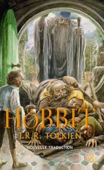
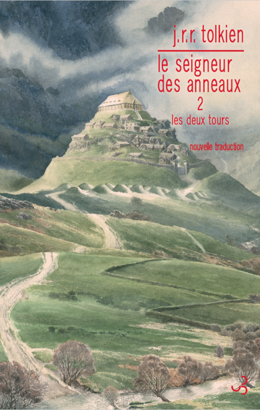
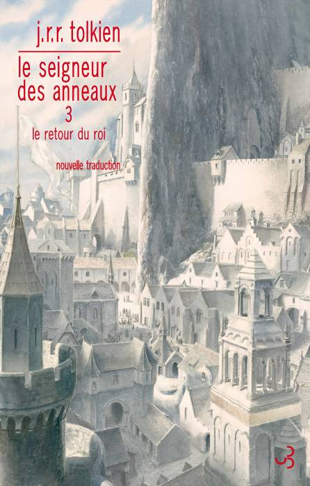
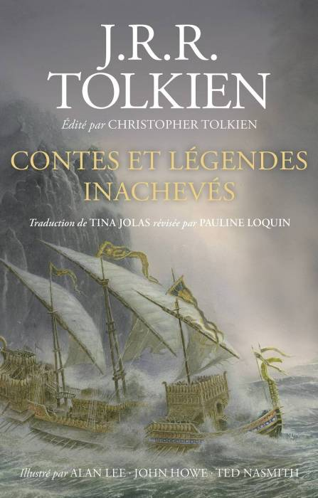
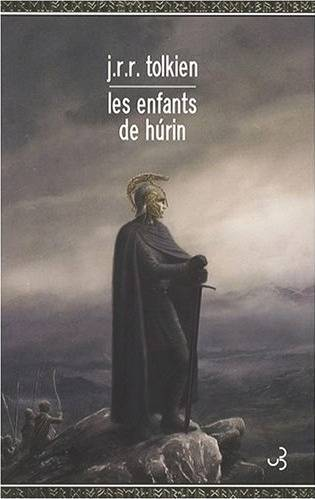
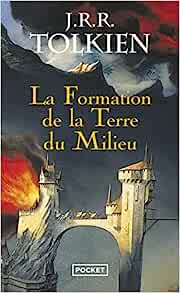
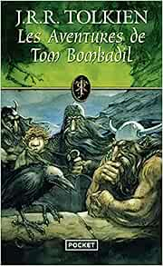
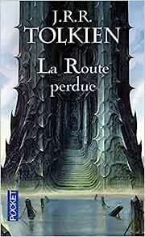
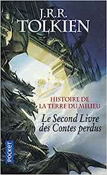

Les livres de Tolkien
Cette liste ne comprend pas tous les écrits posthumes de Tolkien, tels que "Les enfants de Hürin" et "Biblo le Hobbit : Histoire d'un aller retour", qui ont été édités et publiés par Christopher Tolkien, le fils de J.R.R Tolkien, après sa mort
- Le Hobbit
- Le seigneur des Anneaux - La communauté de l'anneau
- Le seigneur des Anneaux - Les deux tours
- Le seigneur des Anneaux - Le retour du roi
- Le silmarillion
- Contes et légendes inachevés
- Les enfants de Húrin
- Bilbo le Hobbit : Histoire d'un aller et retour
Ordre de lecture recommandé
Voici la liste des romans de l'univers Tolkien (y compris ceux sortis à titre posthumes) selon l'ordre de lecture recommandé.
-
1937
Le hobbit
Bilbo Baggins, un hobbit paisible, se retrouve embarqué dans une aventure extraordinaire lorsqu'il est recruté par un groupe de nains pour récupérer un trésor gardé par le dragon Smaug.
-
1954
La Communauté de l'anneau
Frodo Baggins, un hobbit, se voit confier la tâche de détruire l'Anneau unique, une arme puissante convoitée par le seigneur des Ténèbres Sauron, en formant une communauté de compagnons pour l'accompagner.
Le seigneur des anneaux
-
1954
Les Deux Tours
La communauté se divise, et Frodo poursuit sa quête pour détruire l'Anneau, tandis que ses compagnons affrontent de nombreux dangers dans leur lutte contre les forces de Sauron.
Le seigneur des anneaux -
1955
Le Retour du Roi
La quête d eFrodo atteint son point culminant alors qu'il se rapproche du Mont du Destin pour détruire l'Anneau, tandis que la guerre entre les forces de la Terre du Milieu et Sauron atteint son apogée.
Le seigneur des anneaux -
1977
Le Silmarillion
Un recueil d'histoires et de légendes qui raconte la création du monde, Arda, et les événements majeurs qui ont façonné son histoire, y compris les conflits entre les elfes et les forces du mal.

-
1980
Contes et légendes inachevés
Une collection d'histoires inachevées et de fragments qui complètent les récits du Silmarillion et du Seigneur des Anneaux, fournissant plus de détails sur les personnages, les lieux et les événements de la Terre du Milieu.
-
2007
Les Enfants de Húrin
Une histoire tragique se déroulant dans le Premier Âge de la Terre du Milieu, centrée sur le destin de Túrin Turambar, un homme maudit confronté à des épreuves et des tragédies.
-
1983
La Formation de la Terre du Milieu
Le premier volume de la série "The History of Middle-earth", édité par Christopher Tolkien, qui explore les premiers développements et les premières versions des récits de la Terre du Milieu.
The history of middle-earth -
1962
Les Aventures de Tom Bombadil
Une collection de poèmes et de récits en vers mettant en scène le personnage de Tom Bombadil, apparu brièvement dans Le Seigneur des Anneaux.
-
1987
La Route perdue et autres textes
Le cinquième volume de la série "The History of Middle-earth", qui présente des textes et des fragments inachevés liés aux récits du Silmarillion et du Seigneur des Anneaux.
The history of middle-earth -
1983
Les Contes perdus
Le deuxième volume de la série "The History of Middle-earth", contenant des histoires et des versions alternatives des récits du Silmarillion.
The history of middle-earth
L'histoire de ces OEUVRES
Le processus de publication des œuvres de J.R.R. Tolkien et le rôle de son fils dans la perpétuation de ces œuvres sont étroitement liés. Tout au long de sa carrière, J.R.R. Tolkien a créé un vaste univers avec des récits complexes et des langues élaborées, mais il n'a pas pu terminer toutes ses œuvres avant sa mort en 1973.
C'est là que Christopher Tolkien, son fils, a joué un rôle essentiel. En tant qu'éditeur et archiviste méticuleux, Christopher a consacré des années à examiner les notes, les brouillons et les manuscrits de son père, travaillant sans relâche pour donner vie à ces œuvres inachevées. Il a édité et publié des livres tels que "Le Silmarillion", "Les Enfants de Húrin" et "Contes et légendes inachevés", offrant aux lecteurs un aperçu plus approfondi de l'univers de la Terre du Milieu. Grâce à son travail diligent et respectueux de la vision de son père, Christopher Tolkien a permis aux fans de Tolkien de continuer à explorer et à apprécier son héritage littéraire bien au-delà de son décès.